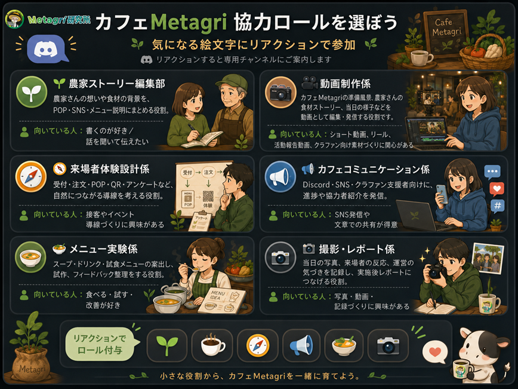

役割で関わる
農家ストーリー編集部員、動画制作係、メニュー実験係など、何者として関わるかを選びやすくします。
大切なお知らせ
9月27日の準備を前提とした新しい制作・試作・調整は停止します。再始動時は、必要な役割、担当範囲、参加条件、開催日を改めてご案内します。
2026年8月30日の「Metagri体験キッチン」は別企画として予定どおり実施します。
掲載日: 2026年8月4日
農家ストーリー編集部員、動画制作係、メニュー実験係など、何者として関わるかを選びやすくします。
事前だけ、当日だけ、発信だけ、試食フィードバックだけでも参加できます。無理なく続けられる単位に区切ります。
POP、SNS投稿、写真、動画、レポートなど、協力の跡が残り、自分の実績としても扱える形を目指します。
以下は再設計の参考として残している役割案です。現在、Discordでのリアクション受付やロール付与は行っていません。
農家さんの想いや食材の背景を、POP・SNS投稿・メニュー説明文にまとめる役割です。
文章を書くのが好きな人、農家さんの話を聞いて伝えることに関心がある人向け。
カフェMetagriの準備風景、農家さんの食材ストーリー、当日の様子などを動画として編集・発信する役割です。
ショート動画、リール、活動報告動画、クラファン向け素材づくりに関心がある人向け。
受付、注文、POP、QR、アンケートなど、来場者が自然にMetagriとつながる導線を考える役割です。
接客、イベント導線の設計に関心がある人向け。
Discord・SNS・クラファン支援者向けに、準備の進捗や協力者紹介を発信する役割です。
SNS発信や文章での進捗共有が得意な人向け。
スープ・ドリンク・試食メニューの案出し、試作、フィードバック整理をする役割です。
食べること、試すこと、改善することが好きな人向け。
当日の写真、来場者の反応、運営の気づきなどを記録し、実施後レポートにつなげる役割です。
写真・動画・記録・レポートづくりに関心がある人向け。
以下は受付停止前に想定していた参加フローです。募集再開時には、役割と参加方法を改めてご案内します。
新体制と必要な役割が決まった後、公式サイトとDiscordでお知らせします。
再設計後の役割、担当範囲、参加条件をご確認ください。
再募集の案内に沿って、無理なく担当できる関わり方を選びます。
事前だけ、当日だけ、試食だけ、発信だけでも持ち場を持って関わります。

協力内容に応じて、以下のような特典・参加メリットを用意予定です。正式な内容は募集開始時にあらためて案内します。
イベントページ、SNS、実施後レポート等に協力者名を掲載します。
POP、動画、写真、SNS投稿などを自身の実績として掲載できます。
2026年8月30日（日）開催の「Metagri体験キッチン」への参加や、1DAYカフェ当日のドリンク優待など、協力内容に応じた特典をご案内します。
協力内容に応じて、協力農家さんの旬の農産物などを検討します。
立ち上げに関わった共創メンバーとしての記念・証明を用意予定です。
メニュー開発、農家ストーリー、来場者アンケート結果などを公式サイトとDiscordで限定共有します。
企画メンバー・協力者向けの振り返りに参加できます。次回につながる気づきも一緒に残します。
新しい体制と必要な役割が決まり次第、このページとMetagri研究所の公式Discordでご案内します。